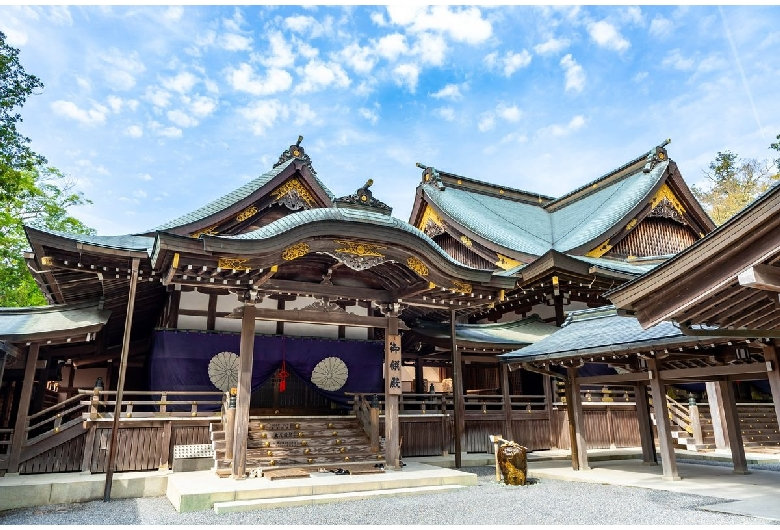

추천하시는 책이 있나요?
<주신구라 번역본>
책은 뭐든지 좋으니까 많이 읽는 게 좋다고 생각해요. 그냥 작품 하나를 소개한다고 하면 제가 대학 다닐 때 일본 에도시대를 연구했어요. 작품 중에 주신구라(忠臣蔵)라는 작품이 있어요. 한국 지도 교수님께서 번역하신 책입니다. 47인의 사무라이를 다룬 이야기예요. 일본 국민 작품이라서 굉장히 유명한 작품입니다.
<주신구라 번역본>
책은 뭐든지 좋으니까 많이 읽는 게 좋다고 생각해요. 그냥 작품 하나를 소개한다고 하면 제가 대학 다닐 때 일본 에도시대를 연구했어요. 작품 중에 주신구라(忠臣蔵)라는 작품이 있어요. 한국 지도 교수님께서 번역하신 책입니다. 47인의 사무라이를 다룬 이야기예요. 일본 국민 작품이라서 굉장히 유명한 작품입니다.
미에(三重)현에 이세신궁(伊勢神宮)이라는 데가 있어요. 일본 신화에 나오는 태양신 아마 테라스 오오미카미(天照大神)를 모시는 신궁이고, 일본 설날 때 일본 총리가 참배하러 가는 곳이지만 야스쿠니 신사(靖國神社)랑은 성격이 아주 달라요. 야스쿠니 신사는 전범도 합사하고 있지만, 이세신궁은 일본이라는 나라의 원류가 흐르고 있는 신궁 중 하나거든요. 신화나 황실과 관련이 있는 곳이니까 가볼 만할 것 같습니다.
<이세신궁 내궁>
저도 설날에 버스 투어로 몇 번 간 적이 있어요. 저번에 그냥 운전해서 간 적이 있는데, 너무 힘들었거든요. 그래서 차라리 설날 새벽에 나고야에서 이세 신궁으로 가는 투어로 가는 게 낫겠다 싶어서 버스 투어 신청해서 갔어요. 옛날에 일본 사람이 죽기 전에 한 번쯤 해보라고 한 것이 이세마이리(伊勢参り)라고 에도에 사는 사람들이 이세까지 참배하러 갔다 오고, 본인이 직접 가지 못하는 경우는 이세 신궁에 가는 사람한테 돈을 주면서 나 대신 참배 해달라, 기도해달라고 부탁하기도 했어요. 그래서 여행이 굉장히 유행했던 시기가 있었어요. 시대 불문하고 일본 사람도 한 번은 가보고 싶어 하는 곳이니까 여러분도 한 번 정도는 가보시면 좋을 것 같습니다.
<지브리 영화 붉은돼지>
저는 지브리 애니메이션 좋아합니다. 제가 어릴 때 봤던 작품은 미래소년 코난이고, 좋아하는 작품은 붉은 돼지예요. 그냥 지브리 스튜디오 애니메이션 다 보셨으면 좋겠어요.